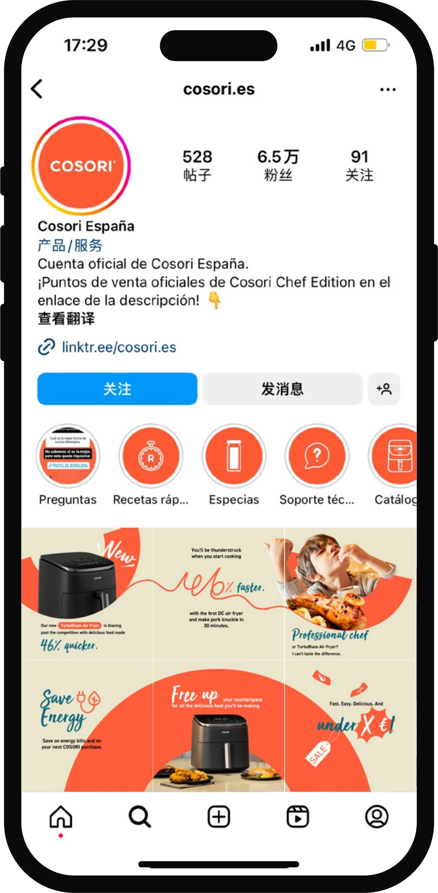
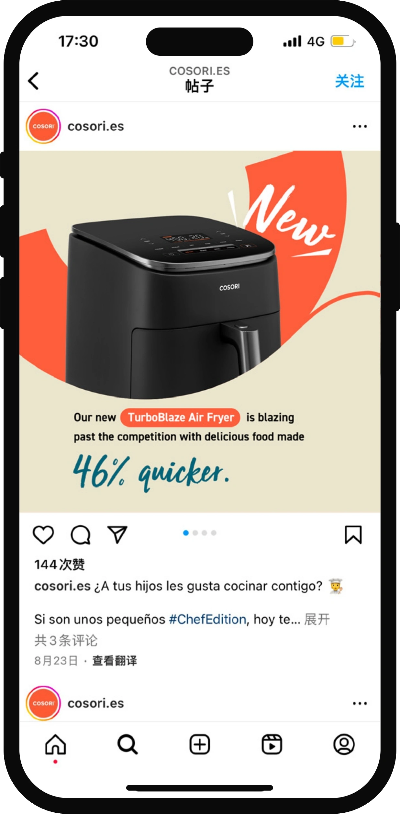
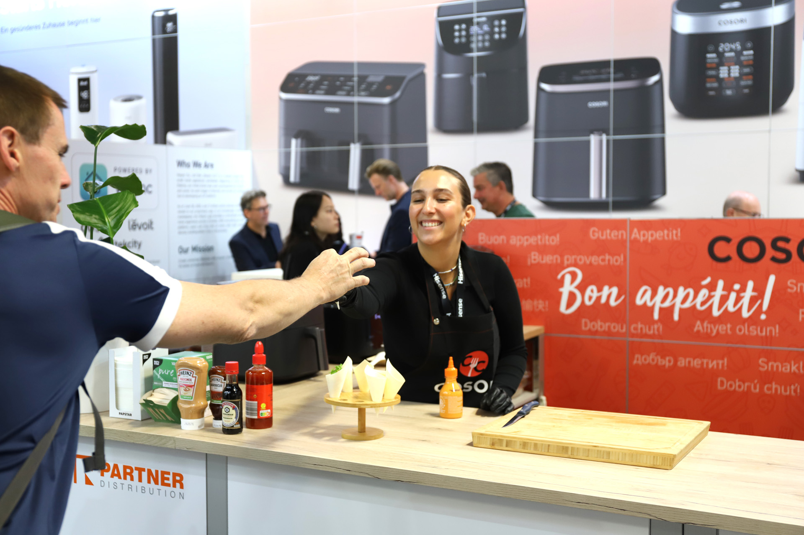

Less oil, better taste Easy to use and clean Quiet, compact, energy-efficient
In the app
Cooking charts and video recipes
My part
Worked with the marketing director on the audience analysis, USP ranking, and key message house.
Warm-up
Make the name familiar before launch day
Timing
Five-day countdown on social (T−5 to T−1)
Content
Benefits came out in stages, each tied to an everyday cooking moment
My part
Worked with the creative team from brainstorming ideas through to producing the campaign assets.
Launch event, Frankfurt am Main
Let people see it work
Live
Cooked live for guests at the launch event in Frankfurt am Main
Afterward
Filmed and posted the highlights for everyone who couldn’t be there
My part
Helped write the event copy and prepare the materials.
PR & creators
Reach people through the press and creators they already follow
Timing
Press and creator posts timed to the launch schedule
Message
Every channel led with the same message
My part
Helped coordinate launch activities with the PR and creator teams.
From launch to purchase
Turn launch interest into orders
Path
Launch promotions and a clear route to buy, alongside the campaign messages
My part
Took on Q4 traffic conversion and the follow-up analysis.
Launch timeline



COSORI launch event, Frankfurt am Main, October 2023.
Mail
Thank you for joining us in Frankfurt · Danke, dass Sie in Frankfurt dabei waren
From
COSORI Team
To
Launch event guests · Gäste der Launch-Veranstaltung
Date
October 2023 · Oktober 2023
Hello,
Thank you for joining us in Frankfurt am Main for the European launch of the COSORI air fryer. It was great to have you with us as we cooked live and showed what it can do.
Missed a moment? We’re sharing photos and clips from the event on our social channels.
To keep cooking at home: • Cooking charts and video recipes are in the COSORI app. • The air fryer is available on Amazon.
If you have questions or feedback, just reply to this email. Thank you again for being part of the launch.
Warm regards, The COSORI Team
Guten Tag,
vielen Dank, dass Sie uns in Frankfurt am Main zum Europa-Launch der COSORI Heißluftfritteuse begleitet haben. Es war schön, Sie bei uns zu haben, als wir live gekocht und gezeigt haben, was sie kann.
Etwas verpasst? Fotos und Clips von der Veranstaltung teilen wir auf unseren Social-Media-Kanälen.
So kochen Sie auch zu Hause weiter: • Garzeit-Tabellen und Rezeptvideos finden Sie in der COSORI App. • Die Heißluftfritteuse ist bei Amazon erhältlich.
Bei Fragen oder Feedback antworten Sie einfach auf diese E-Mail. Noch einmal vielen Dank, dass Sie Teil des Launches waren.